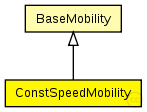

This documentation is released under the Creative Commons license
This documentation is released under the Creative Commons licenseC++ definition: click here
Controls all movement related things of a host
ConstSpeedMobility does not use one of the standard mobility approaches. The user can define a velocity for each Host and an update interval. If the velocity is greater than zero (i.e. the Host is not stationary) the ConstSpeedMobility module calculates a random target position for the Host. Depending to the update interval and the velocity it calculates the number of steps to reach the destination and the step-size. Every update interval ConstSpeedMobility calculates the new position on its way to the target position and updates the display. Once the target position is reached ConstSpeedMobility calculates a new target position.
See also: ConnectionManager
Author: Steffen Sroka, Marc Loebbers, Daniel Willkomm
The following diagram shows usage relationships between types. Unresolved types are missing from the diagram. Click here to see the full picture.

The following diagram shows inheritance relationships for this type. Unresolved types are missing from the diagram. Click here to see the full picture.
| BaseMobility (simple module) |
Module which is responsible for mobility related information like position and movement BaseMobility itself defines a static mobility pattern (means only a position, no movement). Mobility modules which extend from this module willd efien more complex movement patterns. |
If a module type shows up more than once, that means it has been defined in more than one NED file.
| Host (compound module) | (no description) |
| Host (compound module) |
| Name | Type | Default value | Description |
|---|---|---|---|
| notAffectedByHostState | bool | true | |
| coreDebug | bool |
debug switch for the core framework |
|
| x | double |
x coordinate of the nodes' position (-1 = random) |
|
| y | double |
y coordinate of the nodes' position (-1 = random) |
|
| z | double |
z coordinate of the nodes' position (-1 = random) |
|
| debug | bool |
debug switch |
|
| speed | double |
speed of the host (in m/s) |
|
| updateInterval | double |
time interval to update the hosts position (seconds) |
| Name | Value | Description |
|---|---|---|
| class | ConstSpeedMobility |
// // Controls all movement related things of a host // // ConstSpeedMobility does not use one of the standard mobility approaches. // The user can define a velocity for each Host and an update interval. If // the velocity is greater than zero (i.e. the Host is not stationary) the // ConstSpeedMobility module calculates a random target position for the Host. // Depending to the update interval and the velocity it calculates the number of // steps to reach the destination and the step-size. Every update interval // ConstSpeedMobility calculates the new position on its way to the target // position and updates the display. Once the target position is reached // ConstSpeedMobility calculates a new target position. // // @see ConnectionManager // @author Steffen Sroka, Marc Loebbers, Daniel Willkomm // simple ConstSpeedMobility extends BaseMobility { parameters: @class(ConstSpeedMobility); bool debug; // debug switch double speed @unit(mps); // speed of the host (in m/s) double updateInterval @unit(s); // time interval to update the hosts position (seconds) }
This documentation is released under the Creative Commons license